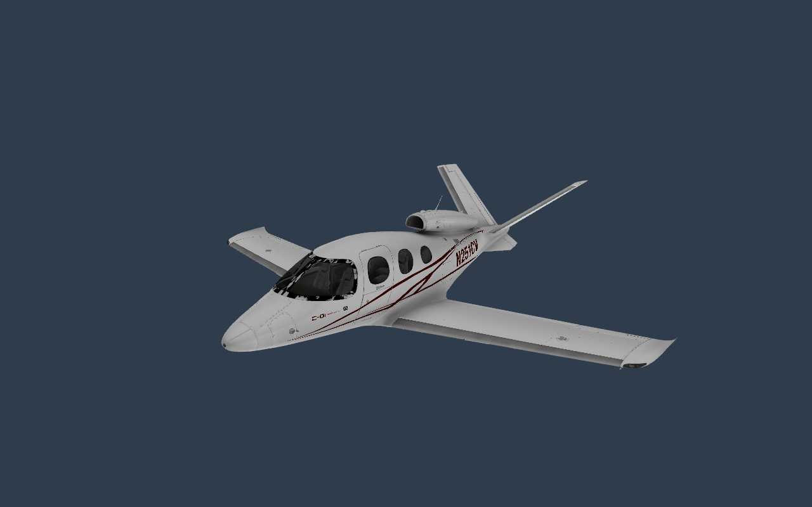
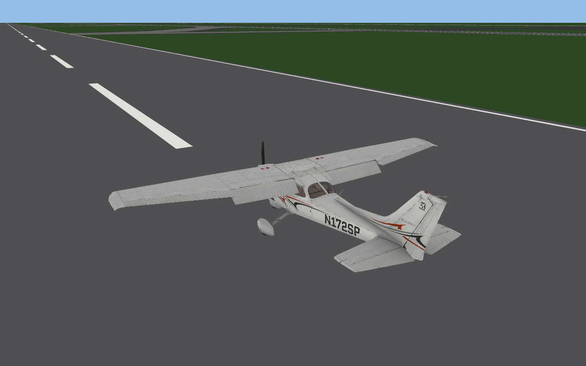

01 / General aviation
↗Cessna 172 SP
Aircraft preview + approximate flight


Independent. Open source. In development.
A new engine. Familiar skies. Rebuilding the X-Plane 12 experience in Rust, one verified step at a time.
Built in the open
Explore an independent engine that reads the aircraft and scenery you already own.
Load original content, take the controls, and follow the work toward a complete simulator. Today’s builds are experimental. Full X-Plane compatibility is the destination, and there is still a long way to go.
Start with the flight guide ↗
Actual openXplane capture · scenery remains incompleteFrom input to motion
Control surfaces and gear state now drive aircraft animation. The Cessna flies with the current approximate model, while original-code comparisons guide the next improvements.
Explore the captures ↗Aircraft, in focus
Original aircraft content, read in place.
Preview support and flight support differ.
Progress, with evidence
Every build is a step forward. Read the research, inspect the source, and see the limitations alongside the results.
Compatibility and roadmap ↗Self-assessed, weighted estimates. These figures do not prove whole-game or visual equivalence.
Your next departure
Try the latest development build. Bring your own installed copy of X-Plane 12 — openXplane includes no game content.
Windows x64 · macOS Apple silicon · Linux x64